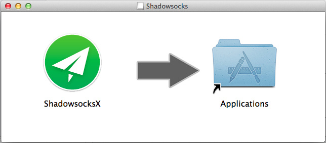
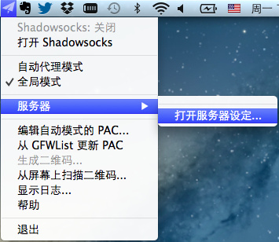
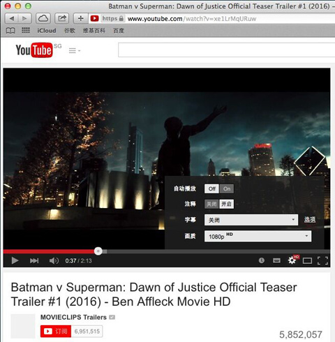
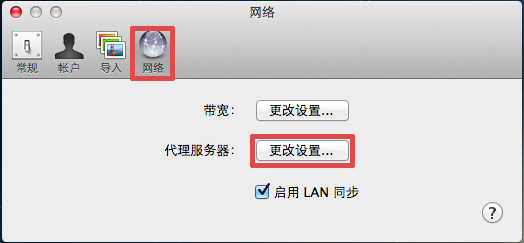
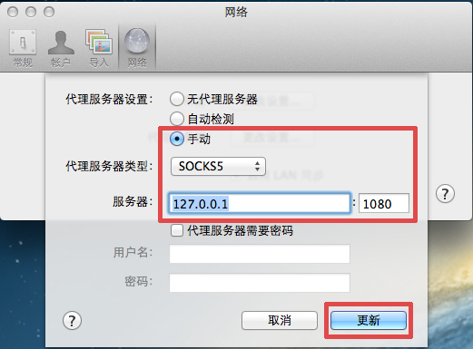

介绍bluevpn pro 客户端 mac osx 操作系统安装使用教程
首先，您应该拥有一个 bluevpn pro 账号，然后再简单配置一下客户端，即可畅享网络，正版 bluevpn pro 账号从 这里 获得。
从第二代起，bluevpn 统一使用 shadowsocks 作为客户端。
一、下载 Mac OSX客户端
二、打开下载的dmg文件，将程序图标拖到右边的Applications，安装完成。

三、进入Launchpad，打开ShadowsocksX程序，程序图标出现在右上方，点击图标-“服务器”-“服务器设定”。

四、根据后台的帐号信息，填写服务器地址（IP或者域名）、端口、加密方式和密码，点确定。


五、选择刚刚配置好的服务器，点“打开Shadowsocks”，完成设置。

如果您不知道如何填写相关信息，可以点击网站页面中线路后方的二维码，然后点击软件菜单中的“从屏幕中扫描二维码”进行录入数据。
Safari或Chrome无需设置，开始科学上网

Tips: 有些应用需要单独设置，比如Dropbox
打开Dropbox首选项，“网络”--代理服务器“更改设置”，然后按下图设置即可

